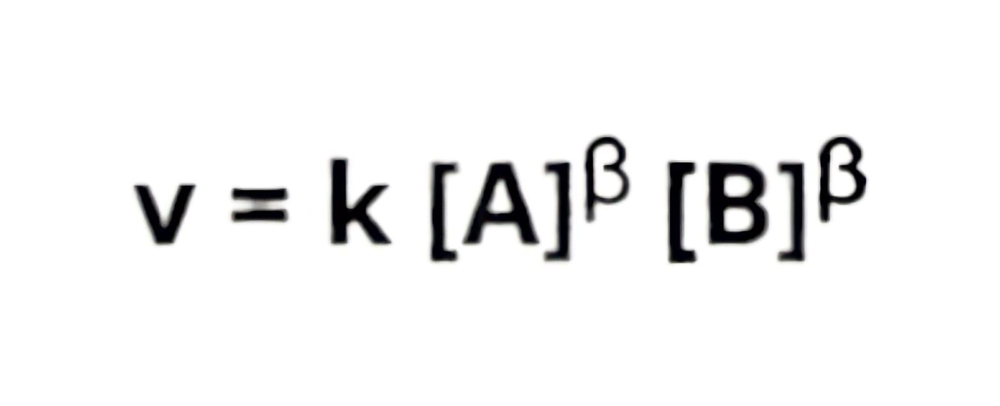

Cinética Química
O que é cinética química?
Cinética química é a parte da química que estuda as velocidades das reações e os fatores que a influenciam.
Cinética química: velocidade média
Velocidade média Considere a transformação de qualquer substância A em B.
A→B
Com o tempo, a quantidade de A no sistema diminui e a quantidade de B aumenta. A equação da taxa de reação química para calcular a taxa média na qual a substância A é consumida é:
Velocidade = |Δ(quantidade de A)| ÷ Δ(tempo)
A meia-vida de uma reação química é o tempo que leva para a concentração dos reagentes diminuir pela metade ou para que 50% dos reagentes sejam consumidos durante a conversão.
Cinética química: colisão entre moléculas do reagente
O contato entre os reagentes favorece que as moléculas encontrem-se umas com as outras, havendo colisão entre si (choque entre moléculas), promovendo a formação do complexo ativado e, consequentemente, dos produtos da reação. As colisões entre as moléculas devem ocorrer com uma energia mínima para que o complexo ativado seja formado, a chamada energia de ativação.
Além disso, quando uma molécula de um reagente colide com outra molécula, os átomos de ambas entram em contato entre si, formando uma estrutura molecular denominada de complexo ativado. Após a formação desse complexo, as ligações entre alguns de seus átomos são rompidas e os produtos são formados.
 A teoria de colisão serve de referência para qualquer exemplo de reação, estando os reagentes em qualquer estado físico, mas principalmente no estado gasoso. Ela baseia-se na proposta de ocorrência de dois tipos de colisão, a favorável e a não favorável.
Colisão favorável (choque eficaz):
Nesse tipo de colisão, considera-se que todos os átomos de uma molécula chocam-se com todos os átomos de outra molécula. Na representação abaixo é notório que cada átomo da molécula diatômica da esquerda encontra-se com cada átomo da molécula diatômica da direita. Assim, há a formação mais rápida do produto.
A teoria de colisão serve de referência para qualquer exemplo de reação, estando os reagentes em qualquer estado físico, mas principalmente no estado gasoso. Ela baseia-se na proposta de ocorrência de dois tipos de colisão, a favorável e a não favorável.
Colisão favorável (choque eficaz):
Nesse tipo de colisão, considera-se que todos os átomos de uma molécula chocam-se com todos os átomos de outra molécula. Na representação abaixo é notório que cada átomo da molécula diatômica da esquerda encontra-se com cada átomo da molécula diatômica da direita. Assim, há a formação mais rápida do produto.
 Colisão não favorável (choque não eficaz)
Não são todos os átomo da molécula que se chocam com os átomos de outra molécula. A imagem a seguir pode-se observar que apenas um átomo da molécula da esquerda encontra-se com um átomo da molécula da direita. Os outros átomos só se encontram após o primeiro choque acontecer, fazendo com que a formação do produto ocorra de forma mais lenta.
Colisão não favorável (choque não eficaz)
Não são todos os átomo da molécula que se chocam com os átomos de outra molécula. A imagem a seguir pode-se observar que apenas um átomo da molécula da esquerda encontra-se com um átomo da molécula da direita. Os outros átomos só se encontram após o primeiro choque acontecer, fazendo com que a formação do produto ocorra de forma mais lenta.

Lei da cinética química
A lei da taxa de reação é dada pela seguinte equação, que relaciona a concentração do reagente (em mol/L) com a taxa de conversão:
 Onde: v = taxa de reação. Geralmente manifestado por manchas. L-1. min-1 ou mol.L-1.s-1; k = constante de taxa. Os valores são típicos de cada reação e variam com a temperatura.
[A] e [B] = concentrações dos reagentes comuns A e B em mol L-1. m e n = são chamados de "ordens de reação" e só podem ser determinados experimentalmente. Para reações elementares, ou seja, reações que ocorrem em uma única etapa, esses valores são iguais aos coeficientes dos reagentes. No entanto, isto só se aplica a reações rudimentares. Para outras reações que ocorrem em múltiplas etapas, vários experimentos devem ser realizados para determinar o valor exato. A soma “m + n” indica a ordem geral da reação. Observe que a taxa de reação (v) é proporcional à concentração do reagente.
A lei da taxa de reação para essas reações elementares também é conhecida como lei de Guldberg-Waage ou lei da ação das massas, e é discutida abaixo.
Onde: v = taxa de reação. Geralmente manifestado por manchas. L-1. min-1 ou mol.L-1.s-1; k = constante de taxa. Os valores são típicos de cada reação e variam com a temperatura.
[A] e [B] = concentrações dos reagentes comuns A e B em mol L-1. m e n = são chamados de "ordens de reação" e só podem ser determinados experimentalmente. Para reações elementares, ou seja, reações que ocorrem em uma única etapa, esses valores são iguais aos coeficientes dos reagentes. No entanto, isto só se aplica a reações rudimentares. Para outras reações que ocorrem em múltiplas etapas, vários experimentos devem ser realizados para determinar o valor exato. A soma “m + n” indica a ordem geral da reação. Observe que a taxa de reação (v) é proporcional à concentração do reagente.
A lei da taxa de reação para essas reações elementares também é conhecida como lei de Guldberg-Waage ou lei da ação das massas, e é discutida abaixo.

Os fatores que influenciam a velocidade das reações:
- Natureza dos reagentes: A natureza dos elementos pode modificar a velocidade das reações devido a vários fatores, bem como a presença de grupos funcionais específicos, a polaridade das moléculas, a quantidade de energia necessária para romper as ligações químicas e a estabilidade dos intermediários formados durante a reação.
Além disso, a quantidade de átomos presentes em cada um dos reagentes influencia a velocidade de uma reação, já que, quanto maior o número de átomos na molécula, mais tempo será gasto para que eles sejam separados (quebra das ligações) para a formação do complexo ativado.
Considerando os processos a seguir:
Processo 1: CH4 + 2O2 → CO2 + 2H2O
Processo 2: 2H2 + O2 → 2H2O
Analisando as reações, o processo 2 ocorre com maior velocidade, pois seus reagentes são formados por moléculas com menor quantidade de átomos. Já no processo 1, um dos reagentes apresenta cinco átomos.

- Superfície de contato: Quando os reagentes estão no estado sólido, a sua fragmentação ou redução em partículas menores aumenta grandemente a velocidade da reação, facilita o contato entre os reagentes e promove colisões entre partículas.
Por exemplo, o carbono queima mais rápido quando é pequeno. Na forma de pó, a taxa de combustão é tão alta que pode ocorrer uma explosão.
Se você adicionar uma colher de açúcar refinado ou granulado à sua xícara de café para adoçá-la, o sabor permanecerá o mesmo mesmo depois que o açúcar estiver completamente dissolvido. No entanto, é fácil perceber que o açúcar refinado (com superfície de contato maior) se dissolve mais rapidamente do que o açúcar granulado (com superfície de contato menor).

- Luz: Em determinadas reações, a luz pode ser necessária para ativar reagentes ou catalisadores específicos, acelerando, assim, a velocidade da reação.Por exemplo, na fotossíntese, a luz é essencial para atividade dos pigmentos clorofila, que absorvem a luz do sol e a utilizam para converter dióxido de carbono e água em glicose e oxigênio.
Por outro lado, em certas reações sensíveis à luz, a exposição à luz pode diminuir a velocidade da reação. Isso pode ocorrer em reações fotoquímicas, onde a luz absorvida pelos reagentes pode causar mudanças estruturais que afetam negativamente a reatividade. Um exemplo de reação sensível à luz é o peróxido de hidrogênio (H2O2), popularmente conhecido como água oxigenada, sofre decomposição se exposto à luz solar. Esse processo se torna mais lento se o H2O2 for armazenado em frascos opacos.
- Pressão: Quando há o aumento da pressão, a concentração dos reagentes também elevam, fazendo com que haja um aumento na frequência de colisões entre as moléculas. Uma maior frequência de colisões aumenta a probabilidade de os reagentes colidirem com energia suficiente para que ocorra uma reação química.
Além disso, quando a pressão é aumentada, o volume dos gases diminui, o que resulta em uma maior proximidade entre as moléculas. Esse aumento na proximidade aumenta ainda mais a chance de colisões efetivas, resultando em um aumento na velocidade da reação.

- Temperatura: À medida que a temperatura aumenta, a velocidade das partículas que compõem o reagente também aumenta, e o número de colisões e a intensidade das colisões também aumentam. Como resultado, a taxa de reação aumenta.
Supõe-se que a taxa de reação dobra para cada aumento de 10°C na temperatura.

Observando esta figura, observe que em temperaturas abaixo de T1, menos moléculas podem reagir (com maior energia Ea) do que em temperaturas acima de T2. O aumento da temperatura aumenta a energia cinética média das moléculas, deslocando a curva para a direita e aumentando o número de moléculas nas condições de reação.
- Concentração dos reagentes: Quando um reagente está em uma solução ou um gás está contido em um recipiente fechado, quanto maior sua concentração, mais rápida será a taxa de reação. Isso acontece porque quanto mais partículas houver no mesmo espaço, mais colisões haverá entre elas. O “ataque” do ácido ao metal, provocando a liberação de hidrogênio, torna-se mais intenso à medida que a concentração do ácido aumenta. Bebês prematuros necessitam de cuidados especiais e são mantidos em estufas. Eles podem aumentar a concentração de oxigênio fornecida à criança. Como resultado, as reações de oxigenação no corpo das crianças são aceleradas e o consumo de energia é reduzido. A mudança na taxa de reação devido à concentração dos reagentes é geralmente expressa pela seguinte equação:

Onde α e β são expoentes, correspondendo em alguns casos aos coeficientes de A e B na reação. A constante k é chamada de constante de taxa de reação e depende da temperatura.

- Catalisador: Um catalisador é uma substância que aumenta a velocidade de ocorrência de uma reação química através redução da energia de ativação, sem ser consumido na reação, ou seja, o catalisador favorece a formação do complexo ativado em um menor tempo e com uma menor quantidade de energia de ativação. Sendo assim, ao final da reação, ele pode ser removido integralmente do meio reacional, pois o mesmo não participa de nenhum dos produtos.

- Eletricidade: A eletricidade pode influenciar a velocidade de uma reação química por meio de um processo chamado eletrólise, a qual é um processo químico em que uma corrente elétrica é passada através de uma solução ou de um composto químico para induzir uma reação que não ocorreria espontaneamente. Ademais, a eletricidade também pode ser usada como fonte de energia para alimentar reações químicas, aumentando a energia de ativação necessária para que a reação ocorra. Isso pode ser feito através da aplicação de uma corrente elétrica através de um catalisador, que ajuda a aumentar a velocidade da reação.
Exemplos de reações cinéticas:
- Reação de oxidação do ferro:
Fe + O2 + H2O → Fe2O3.H2O (ferrugem)
- Reações de cozimento dos alimentos podem variar, mas um exemplo é a caramelização dos açúcares:
C12H22O11 (sacarose) → C12H24O12 + calor (caramelo)
- Reação de combustão da vela:
C25H52 (ceras) + 38O2 → 25CO2 + 26H2O + calor (liberação de gases e energia)
- Reação entre bicarbonato de sódio e vinagre:
NaHCO3 (bicarbonato de sódio) + CH3COOH (ácido acético) → CO2 (gás carbônico) + H2O + NaCH3COO (acetato de sódio)
- Reações envolvidas na digestão dos alimentos são complexas, mas um exemplo é a quebra de proteínas em aminoácidos:
Proteínas + HCl (ácido clorídrico) + enzimas → aminoácidos
- Reação de coagulação das proteínas do leite:
Proteínas do leite + ácido (ex: ácido cítrico presente no suco de limão) → formação de grumos (coalhada)